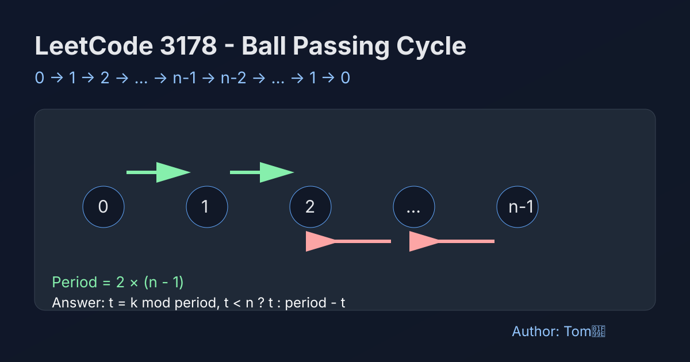

LeetCode 3178: Find the Child Who Has the Ball After K Seconds (Cycle Math)
LeetCode 3178MathSimulationToday we solve LeetCode 3178 - Find the Child Who Has the Ball After K Seconds.
Source: https://leetcode.com/problems/find-the-child-who-has-the-ball-after-k-seconds/

English
Problem Summary
There are n children labeled from 0 to n-1. A ball starts at child 0. Each second it moves to the next child in the current direction. At both ends, the direction flips. Return the child index holding the ball after k seconds.
Key Idea
The movement forms a repeating cycle: 0 → 1 → ... → n-1 → n-2 → ... → 1 → 0. The cycle length is 2*(n-1).
Algorithm
1) If n == 1, answer is always 0.
2) Let period = 2*(n-1) and t = k % period.
3) If t < n, ball is at t (forward part).
4) Otherwise ball is at period - t (backward part).
Complexity
Time complexity O(1). Space complexity O(1).
Reference Implementations (Java / Go / C++ / Python / JavaScript)
class Solution {
public int numberOfChild(int n, int k) {
if (n == 1) return 0;
int period = 2 * (n - 1);
int t = k % period;
return (t < n) ? t : (period - t);
}
}func numberOfChild(n int, k int) int {
if n == 1 {
return 0
}
period := 2 * (n - 1)
t := k % period
if t < n {
return t
}
return period - t
}class Solution {
public:
int numberOfChild(int n, int k) {
if (n == 1) return 0;
int period = 2 * (n - 1);
int t = k % period;
return (t < n) ? t : (period - t);
}
};class Solution:
def numberOfChild(self, n: int, k: int) -> int:
if n == 1:
return 0
period = 2 * (n - 1)
t = k % period
return t if t < n else period - tvar numberOfChild = function(n, k) {
if (n === 1) return 0;
const period = 2 * (n - 1);
const t = k % period;
return t < n ? t : period - t;
};中文
题目概述
有 n 个小孩，编号 0 到 n-1。球从 0 号开始，每秒沿当前方向传给相邻小孩。到达两端时方向反转。求 k 秒后球在谁手里。
核心思路
传球轨迹是往返循环：0 → 1 → ... → n-1 → n-2 → ... → 1 → 0，一个完整周期长度为 2*(n-1)。
算法步骤
1）若 n == 1，答案恒为 0。
2）计算 period = 2*(n-1)，再取 t = k % period。
3）若 t < n，处于正向阶段，答案是 t。
4）否则处于反向阶段，答案是 period - t。
复杂度分析
时间复杂度 O(1)，空间复杂度 O(1)。
参考实现（Java / Go / C++ / Python / JavaScript）
class Solution {
public int numberOfChild(int n, int k) {
if (n == 1) return 0;
int period = 2 * (n - 1);
int t = k % period;
return (t < n) ? t : (period - t);
}
}func numberOfChild(n int, k int) int {
if n == 1 {
return 0
}
period := 2 * (n - 1)
t := k % period
if t < n {
return t
}
return period - t
}class Solution {
public:
int numberOfChild(int n, int k) {
if (n == 1) return 0;
int period = 2 * (n - 1);
int t = k % period;
return (t < n) ? t : (period - t);
}
};class Solution:
def numberOfChild(self, n: int, k: int) -> int:
if n == 1:
return 0
period = 2 * (n - 1)
t = k % period
return t if t < n else period - tvar numberOfChild = function(n, k) {
if (n === 1) return 0;
const period = 2 * (n - 1);
const t = k % period;
return t < n ? t : period - t;
};
Comments